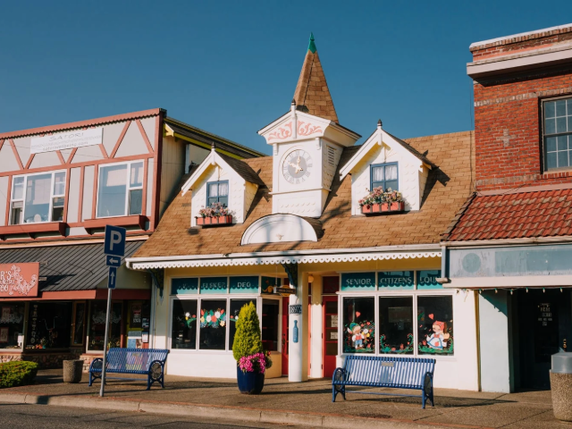
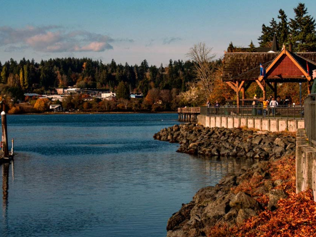
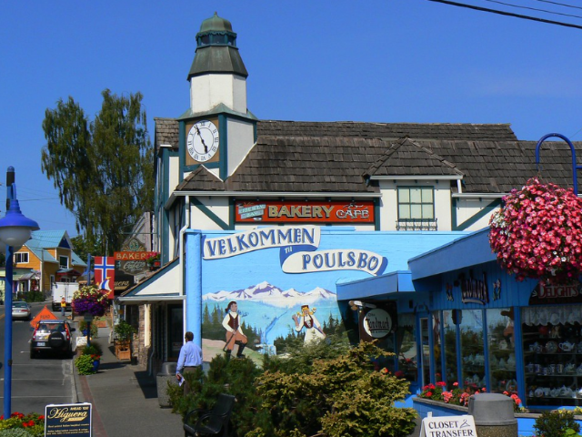
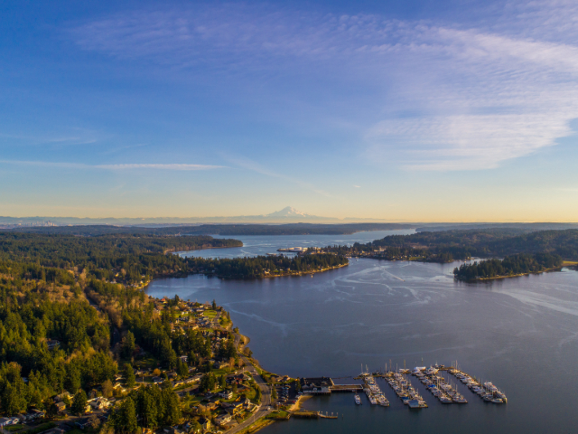
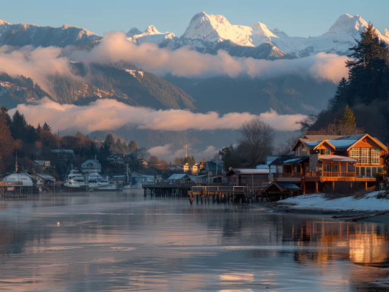
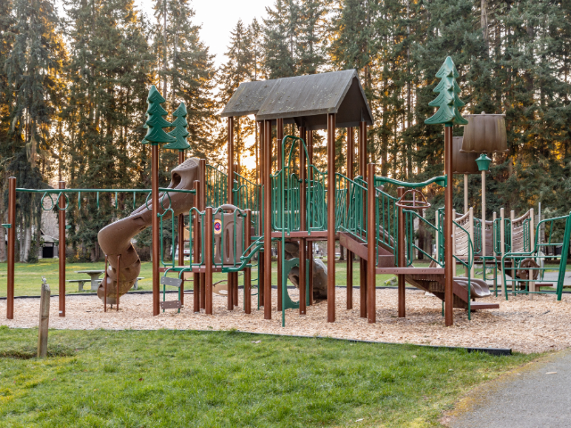
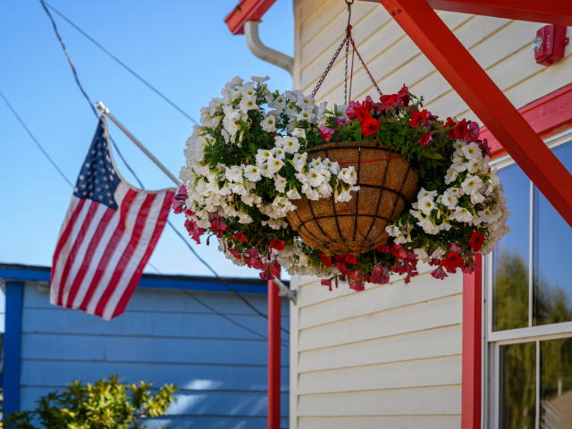
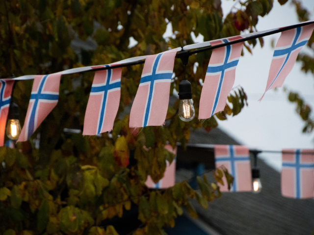
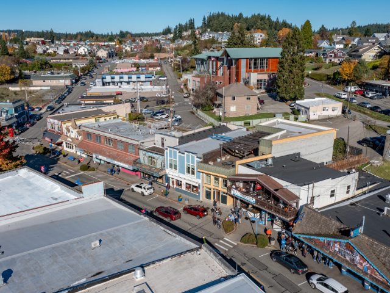
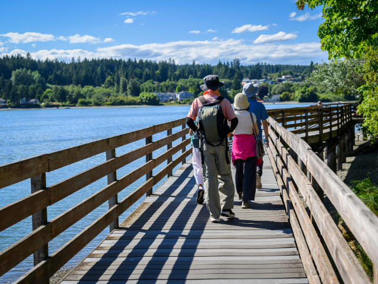

Situated on Liberty Bay in Kitsap County, Poulsbo is affectionately known as "Little Norway" due to its rich Scandinavian heritage. The city was incorporated on December 18, 1907. According to the 2020 census, Poulsbo has a population of 11,970. Located in the Puget Sound region, it is considered a suburban area, offering a blend of small-town charm and proximity to larger urban centers. The median household income in Poulsbo is $95,774, which is notably higher than the state median.










Upcoming Events in Poulsbo
Poulsbo's vibrant community hosts a variety of events throughout the year, celebrating its culture and natural beauty.
| Date | Event | Description |
|---|---|---|
| May 17, 2025 | Viking Fest | A weekend celebration of Poulsbo’s Norwegian heritage. |
| June 8, 2025 | Marine Science Center Open House | Interactive exhibits for kids and adults on marine wildlife. |
| July 4, 2025 | 4th of July Fireworks | Annual waterfront fireworks and music on Liberty Bay. |
| August 2, 2025 | Summer Nights at the Bay | Live music series on the Poulsbo waterfront every Friday. |
| September 21, 2025 | Arts Festival | Local artists and vendors showcase crafts and food. |
| December 7, 2025 | Julefest & Tree Lighting | Scandinavian Christmas traditions, food, and caroling. |